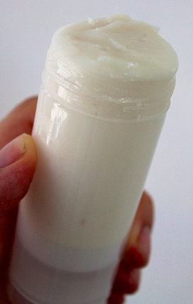

How to Make Your Own Artisanal Natural Deodorant Using Baking Soda and Arrowroot Powder
By: James
Introduction
Creating Your Own Artisanal Deodorant: A Holistic Approach to Personal Care
Previous Subheadings:
- The Benefits of Natural Deodorants for Your Health and the Environment
- Understanding the Ingredients: Baking Soda and Arrowroot Powder
- The Science Behind Body Odor and How Natural Deodorants Work
The personal care industry is full of products that contain harmful chemicals that can damage our bodies and the environment. For a more holistic approach to personal care, making your own natural deodorant is an excellent choice. In this guide, we will delve into the benefits of natural deodorants, the science behind body odor, and the ingredients needed to make your own artisanal deodorant.
Contrary to what some may believe, sweat itself doesn't have an unpleasant odor. It is the bacteria on our skin that breaks down sweat and produces body odor. Using baking soda and arrowroot powder in your deodorant can help inhibit bacterial growth and neutralize odors. These natural ingredients are more gentle on the skin than their chemical counterparts, making them ideal for those with sensitive skin.
Making your own deodorant is not only healthier for you, but it is also better for the environment. Conventional deodorants often contain harsh chemicals that can pollute the air and water when we wash them off our bodies. By creating your own natural deodorant, you can eliminate these harmful chemicals from your daily routine.
In the following sections, we will discuss the science behind body odor and how natural deodorants work to combat it. We will also provide detailed information on the benefits of each ingredient and how to make your own natural deodorant that is both effective and enjoyable to use. Join us on this journey towards a healthier, more sustainable lifestyle.
Ingredients
Creating your own artisanal natural deodorant using baking soda and arrowroot powder is a fantastic way to avoid harsh and synthetic chemicals found in most commercial deodorants. This approach is not only better for your skin but is environmentally friendly as well. And the best part? You can easily make it at home with just a few simple and affordable ingredients.
To create a natural deodorant that works, you need to have the right ingredients. The first two ingredients you'll need are baking soda and arrowroot powder. Baking soda acts as an odor neutralizer, while arrowroot powder helps to absorb moisture. The combination of these two ingredients creates a powerful deodorizer that keeps you feeling fresh all day long.
But, it's not just about the ingredients you use - it's also about their quality. When choosing your ingredients, make sure to select baking soda that's aluminum-free and arrowroot powder that's organic. Using high-quality ingredients ensures that you're putting only the best ingredients on your skin.
Once you have these two essential ingredients, you can add in other natural ingredients to create a deodorant that's unique to you. Some popular additions include coconut oil, shea butter, and essential oils. These ingredients not only help to moisturize your skin but can also provide additional benefits such as antibacterial and antifungal properties.
Making your own artisanal natural deodorant using baking soda and arrowroot powder is a simple, affordable, and eco-friendly way to stay fresh and odor-free all day long. With the right ingredients and a little bit of creativity, you can create a deodorant that not only works but also smells and feels amazing.
Instructions
Creating Your Own Artisanal Natural Deodorant: A Step-by-Step Guide
Finding a natural deodorant that checks all the boxes of effectiveness, affordability, and fragrance can be an uphill task. Not to mention that those who have sensitive skin will attest that choosing a deodorant becomes even more intense, as some can cause rashes, irritation, and even trigger allergies. This is where you come in - taking control and creating your own deodorant. It may sound daunting at first, but with a little guidance, making your artisanal natural deodorant using baking soda and arrowroot powder can be a satisfying and rewarding experience.
First things first - gather all the required ingredients, which include baking soda, arrowroot powder, coconut oil, and essential oils. Then, in a mixing bowl, combine the baking soda and arrowroot powder, making sure to sift them thoroughly. Next, add the coconut oil and essential oils into the bowl and whisk them all together into a smooth consistency. Once combined, scoop the resultant paste into your preferred container, and voila! Your deodorant is ready to use.
However, before using, it is imperative to take note of a few things. Because this is an all-natural product, storing it in a cool place is a must, as it can melt easily. Furthermore, start by using small amounts and do not apply immediately after shaving, as it might cause a sting. Also, make sure to test the deodorant on a small patch of skin to avoid any adverse reactions.
In conclusion, making your artisanal natural deodorant is a skill that you can readily acquire. It offers many benefits, including being cost-effective, organic, and gentle on your skin. Additionally, when you create your own deodorant, you can customize the fragrance, making it more appealing to your senses. Follow our step-by-step guide and learn never to worry about finding the perfect deodorant again!
Benefits of Using Natural Deodorant
If you're in search of a natural and safe alternative to your everyday deodorant, look no further than artisanal natural deodorant made with baking soda and arrowroot powder. Not only does it eliminate harmful chemicals found in traditional deodorants, but it also boasts a range of benefits for your health and well-being.
One of the key benefits of using natural deodorant is that it doesn't contain aluminum. Aluminum is commonly found in mainstream deodorants and antiperspirants and has been linked to negative health effects. Natural deodorants, on the other hand, are formulated without aluminum and other harmful chemicals, making them a safer option for your body.
Another advantage of using natural deodorant is that it's less likely to cause skin irritation. Traditional deodorants often contain fragrances and artificial ingredients that can lead to rashes and itching, especially for those with sensitive skin. Natural deodorants, on the other hand, use natural ingredients that don't cause such reactions.
In addition to being better for your body, natural deodorant also has a lower impact on the environment. Many traditional deodorants are packaged in plastic containers and contain harmful chemicals that can harm our planet. By choosing a natural deodorant, you're making a more sustainable choice that's better for the environment.
It's worth noting that the benefits of natural deodorant are not just limited to the individual. Because of its eco-friendly and chemical-free nature, natural deodorant aligns with a more ethical and sustainable way of living. By supporting natural deodorant brands, you're endorsing an industry that prioritizes health, the environment, and social responsibility.
In conclusion, making the switch to natural deodorant comes with a host of benefits for both you and the world around you. From eliminating harmful chemicals to reducing the likelihood of skin irritation, natural deodorants provide a safe and sustainable solution for everyday use. So why not give it a try? Your body and the environment will thank you.
Potential Side Effects
When it comes to deodorant, many people are looking for natural alternatives to traditional products that contain harmful chemicals. Natural deodorants containing baking soda and arrowroot powder have become increasingly popular among those who want to avoid the risks of chemical exposure. However, it's important to understand that these natural ingredients may also have potential side effects.
Baking soda, one of the key ingredients in homemade natural deodorant, has natural odor-absorbing properties that make it a popular choice for many people. However, baking soda is also alkaline, so it can cause skin irritation for some individuals, especially those with sensitive skin. This can lead to redness, itching, and discomfort. To reduce the risk of irritation, it's important to use baking soda sparingly and gradually increase the amount as your skin adjusts to the deodorant.
Another key ingredient in homemade natural deodorant is arrowroot powder, which helps to absorb moisture and reduce odor. While arrowroot powder is generally considered safe, some individuals may experience an allergic reaction to the powder. This can lead to itching or redness, especially in people with sensitive skin. To avoid this, it's important to perform a patch test before using the deodorant on a larger area of skin.
In addition to the potential side effects, it's important to note that natural deodorants may not provide the same level of protection as traditional deodorants. While they can be effective at reducing odor, they may not be as effective at reducing sweat. This means that you may need to reapply the deodorant more frequently throughout the day.
Despite the potential side effects, many people find that natural deodorants containing baking soda and arrowroot powder are a safe and effective alternative to traditional products. By taking precautions to avoid irritation and performing a patch test before use, you can enjoy the benefits of natural deodorant without any negative side effects.
Tips for Success
Making your own artisanal natural deodorant using baking soda and arrowroot powder can be a game-changer. Not only can it help you avoid the chemicals and irritants found in commercial products, but it can save you money in the long run, too. However, it's important to keep in mind that creating the perfect formula for your body may require some trial and error. That's why we've compiled a list of tips for success to help guide you through the process.
First, it's important to note that baking soda can be an irritant for some people, causing redness, rashes, or unpleasant odor. To avoid this, start with a small amount of baking soda, and consider gradually increasing the ratio over time as your body adjusts. Similarly, the ratio of baking soda to arrowroot powder can vary based on personal preference, but a common starting point is one part baking soda to two parts arrowroot powder.
Another important factor to consider is the type of essential oils you use. While they can add a pleasant scent to your deodorant, some oils may cause skin irritation or allergic reactions. It's a good idea to do a patch test on your skin with any new oils before adding them to your deodorant recipe. Additionally, consider using oils with antibacterial properties, such as tea tree or peppermint, to further combat odor.
Lastly, the consistency of your deodorant can be influenced by many factors, including the temperature and humidity of your environment. If your deodorant becomes too soft or mushy, try adding more arrowroot powder or storing it in a cooler location. On the other hand, if it becomes too hard or difficult to apply, consider adding more coconut oil or other carrier oils to the recipe.
By following these tips for success, you'll be well on your way to creating your own custom, artisanal natural deodorant using baking soda and arrowroot powder. Get creative with scents and consistency, and enjoy the benefits of a homemade product tailored to your preferences and needs.
Storage
Keeping Your Artisanal Natural Deodorant Fresh: Storage Tips and Tricks
There's no doubt that making your own artisanal natural deodorant can be a rewarding experience. Not only do you get to customize your scent and ingredients, but you can also ensure that your deodorant is free from harsh chemicals and toxins.
However, with any homemade skincare product, proper storage is key to maintaining its efficacy and freshness. In this section, we'll go over some helpful tips and tricks for storing your homemade deodorant.
First and foremost, it's important to keep in mind that natural deodorants don't contain the same preservatives as their store-bought counterparts. This means that they can be more susceptible to spoilage and bacterial growth.
To prevent this from happening, one of the best things you can do is store your deodorant in a cool, dry place. A bathroom or other humid room is not the best option, as the moisture in the air can encourage the growth of harmful bacteria.
Additionally, consider using an opaque container to store your deodorant. Sunlight and other forms of light can cause the ingredients to break down or weaken over time.
If you're making a larger batch of deodorant, consider dividing it into smaller containers. This will prevent the entire batch from spoiling if one of the containers becomes contaminated.
Lastly, pay attention to the expiration dates of your ingredients. Baking soda and arrowroot powder can expire, which can affect the efficacy of your deodorant. Be sure to check the expiration dates before using them in your recipe.
By following these storage tips and tricks, you'll be able to keep your artisanal natural deodorant fresh and effective for longer. Happy crafting!
Potential Modifications
Creating your own artisanal natural deodorant with baking soda and arrowroot powder is a fantastic and easy way to keep your body free from harmful chemicals, and smelling fresh all day. As an added bonus, many natural deodorants contain essential oils that have additional health benefits, including antimicrobial and antifungal properties.
But what if, for example, you've tried that recipe and found it too strong, or too weak, or you've got particularly sensitive skin that needs something more gentle, or you're just keen to try something new?
Fortunately, there are many potential modifications you can make to your homemade deodorant recipe to suit your specific needs.
If you find baking soda to be too abrasive for your skin, try substituting it with magnesium hydroxide, which has a similar pH but is gentler on your skin. You can also adjust the proportion of arrowroot powder to baking soda to achieve a milder or stronger deodorizing effect.
Essential oils are another customization option that can give your deodorant a unique scent and power. For example, tea tree oil has antibacterial properties, lemon and lavender essential oils can combat body odor, and sandalwood oil can give your deodorant a masculine scent.
If you're looking for more rigorous options, you can add activated charcoal to your mix, which is known for its powerful odor-absorbing abilities. Bentonite clay is another great option, as it has antiseptic and absorbent properties that can help keep your underarms dry and fresh.
In conclusion, there are many potential modifications you can make to your homemade deodorant recipe, so don't be afraid to experiment and find the perfect blend of ingredients that works best for you!
Where to Find Ingredients
Making your own artisanal natural deodorant using baking soda and arrowroot powder may sound easy, but the key to success lies in finding top-quality ingredients. Many of these ingredients are not available at your local grocery store, and some have specific requirements that you need to be aware of to ensure the effectiveness of your deodorant.
First and foremost, you need to make sure you're using food-grade baking soda. This is different from the baking soda you use for cleaning or other household tasks, and it's important to source it from a reputable supplier. Look for companies that specialize in baking products or natural ingredients, and read reviews from other DIY deodorant makers to see which brands they recommend.
Arrowroot powder is another essential ingredient that you'll need to find. This natural starch is extracted from the roots of tropical plants and is often used as a thickener or binding agent in cooking. It's an excellent alternative to cornstarch, which is often genetically modified and can irritate sensitive skin. When shopping for arrowroot powder, look for organic, non-GMO varieties.
Other key ingredients you'll need to make your own artisanal deodorant include coconut oil, shea butter, and essential oils. When sourcing these ingredients, keep in mind that they can vary in quality and purity. Opt for unrefined, organic versions of coconut oil and shea butter to ensure that you're getting the most benefits for your skin. Essential oils should be pure and sourced from reputable suppliers to ensure their potency and effectiveness.
Overall, finding top-quality ingredients is essential to creating your own artisanal natural deodorant using baking soda and arrowroot powder. Take the time to research different suppliers and read reviews from other DIY deodorant makers to ensure that you're getting the best ingredients for your deodorant. With the right ingredients and a little bit of know-how, you'll be on your way to creating a deodorant that works for you and is free from harmful chemicals and synthetic fragrances.
Conclusion
After reading about the benefits of using artisanal natural deodorant made with baking soda and arrowroot powder, it's clear that this DIY solution is a game-changer that provides long-lasting odor protection without harsh chemicals. Whether you are eco-conscious, have sensitive skin or are looking for a healthier alternative to traditional deodorants, making your own artisanal natural deodorant is a simple and cost-effective way to achieve all of these goals.
By using natural, high-quality ingredients that are sourced from sustainable and ethical producers, you can ensure that your deodorant not only works well, but also supports your values as a consumer. And since most of the ingredients are readily available at your local grocery store, you can easily whip up a batch in no time!
But the benefits don't stop there - making your own deodorant allows you to customize the scent to your own preferences. Whether you prefer a citrusy aroma or something more floral, you can easily experiment with different essential oils until you find the perfect combination.
In conclusion, making your own natural artisanal deodorant is a rewarding and satisfying experience that not only benefits your health and wellbeing, but also supports a more sustainable and ethical way of living. With the step-by-step instructions and helpful tips provided on this website, there's no reason not to give it a try and see the difference for yourself. Say goodbye to harsh chemicals and hello to a fresher, healthier you!